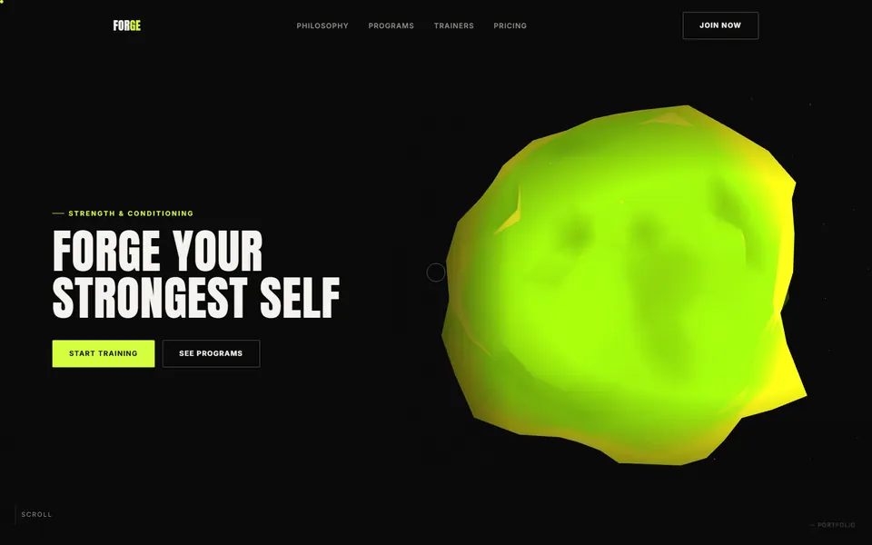
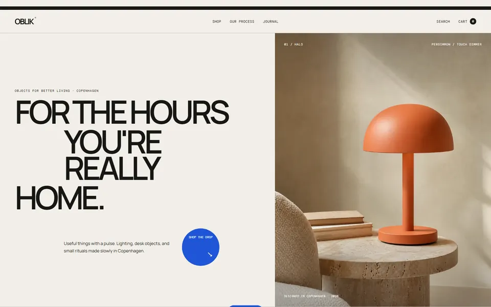

SIX SITES
DOWN THE WELL
Every lane is a working website in this repository. No mockups, no build step, no framework. Rotate the well and open one.
←→ rotate · enter open
Six lanes
Ordered by how much of it is hand-written. Every one opens the real, running site.
-
 AI analytics landing page · scroll-linked product assembly, canvas particle field
AI analytics landing page · scroll-linked product assembly, canvas particle field
-
 Wood-fire restaurant · one rAF loop drives embers, parallax and a heat gauge
Wood-fire restaurant · one rAF loop drives embers, parallax and a heat gauge
-

Strength & conditioning · Three.js displaced solid, GSAP scene sequencing -
 Active game centre, unofficial concept · lava-grid floor, price calculator
Active game centre, unofficial concept · lava-grid floor, price calculator
-
 Consulting firm · four pages on one typographic system
Consulting firm · four pages on one typographic system
-

Design-object store · editorial product grid, working cart
Telemetry
Read off the repository. Lines are hand-written CSS and JavaScript; weight is the whole folder including images.
| Lane | Name | Lines | Weight | Pages | CDN |
|---|---|---|---|---|---|
| 01 | PULSE | 2559 | 392 KB | 1 | 3 |
| 02 | EMBER | 1869 | 952 KB | 1 | 0 |
| 03 | FORGE | 1358 | 2.5 MB | 1 | 3 |
| 04 | TRIGGERED | 1129 | 96 KB | 1 | 0 |
| 05 | MERIDIAN | 808 | 208 KB | 4 | 0 |
| 06 | OBLIK | 525 | 536 KB | 1 | 0 |
| TOTAL | 8248 | 4.6 MB | 9 | 6 |
- 0build steps
- 0frameworks, CSS or JS
- 4/6sites with no CDN at all
- 9pages, all static
Method
Three rules that hold across all six.
-
The world comes before the grid
Each site starts from something physical or graphic that belongs to its subject — a wood fire, a lit cabinet, a deflection yoke. Layout is derived from that, not from a component library.
-
Bake once, animate cheap
Noise, geometry and layout are precomputed at initialisation. Per frame there is a lerp and maybe one pair of trig calls. The well on this page is one path per ring, drawn three times for glow, and nothing else.
-
Stop drawing when nobody is looking
Every render loop in this repository is gated on an IntersectionObserver and on document visibility. Scroll past the well and it stops costing you anything.
Transmit
Say what you want built and roughly when. I’ll tell you honestly whether it should be a static site or something heavier.